Linsay 電路：10/21 量測的費根鮑姆常數分析
中央大學物理系 實驗物理 Group 05 · 整理日期 2026-10-23 · 驅動的變容二極體（MV2109）串聯共振電路
1. 實驗設定
產生器（AFG-2112，High-Z 設定）以固定頻率 f 的正弦波驅動「50 Ω 內阻 → 91.67 µH 電感 → MV2109 → 10 Ω」串聯電路，示波器 CH2 量 10 Ω 上的電壓 \(V_n = 10\,\Omega \times I\)。 程式把驅動振幅 \(V_{pp}\) 一步一步調大，每個振幅記錄 400 個以上的驅動週期，並在基頻波峰的相位每週期取一個值（頻閃取樣）：週期 p 的軌道在分岔圖上是 p 個點，混沌則是一整條帶。
和 10/14 相比：拿掉 56 Ω 改用 10 Ω 感測、探棒從 10x 改成 1x；最後幾組把電路放進鐵盒、筆電改用電池供電。
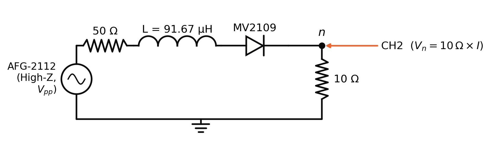
2. 分岔點的求法
不直接用程式「週期標籤切換」的位置，而是用次諧波的成長：倍週期分岔剛發生時，新出現的次諧波振幅隨 \(\sqrt{A-A_n}\) 成長，所以它的平方對驅動振幅是線性的：
$$a_{f/2^n}^{2} \propto (A - A_n)$$取次諧波出現後的前 4 點做線性外插到 0。以 2.2 MHz 的 181245 為例：A₁ = 2.002 ± 0.001 V、A₂ = 3.554 ± 0.002 V、A₃ = 4.217 ± 0.023 V。
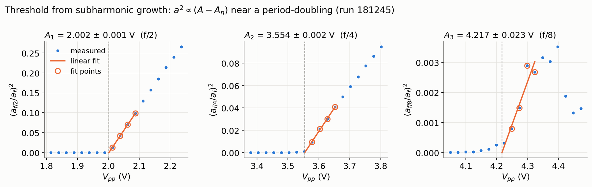
3. 分岔圖
2.2 MHz、每個振幅 4 張、步距 0.025 V 的分岔圖：P1 → P2 → P4 → P8 → 混沌，混沌區內有很寬的週期 3 窗口，再倍週期成週期 6，之後回到混沌，順序和 logistic map 相同。
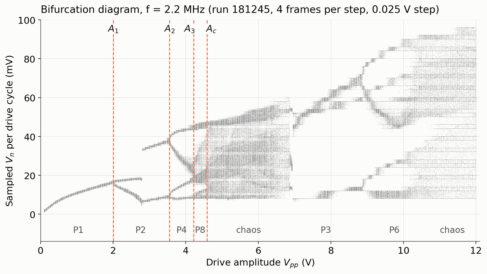
4. δ 的結果
$$\delta_n = \frac{A_{n+1}-A_n}{A_{n+2}-A_{n+1}}, \qquad \delta \approx 1 + \frac{A_3 - A_2}{A_\infty - A_3}$$第二式假設 \(A_\infty - A_n \propto \delta^{-n}\)，用混沌起點代替 A∞。
| 頻率 | 資料 | A₁ (V) | A₂ (V) | A₃ (V) | Ac (V) | δ₁ |
|---|---|---|---|---|---|---|
| 1.9 MHz | 153239 | 1.912 | 4.236 | 4.985 | 5.444 | 3.10 ± 0.23 |
| 2.0 MHz | 5 次重複 | 1.908 | 3.951 | 4.726 | 5.130 | 2.64 ± 0.08 |
| 2.2 MHz | 四組平均 | 2.010 | 3.584 | 4.261 | 4.666 | 2.33 ± 0.08 |
| 理論值 | 4.669 | |||||
所有資料都約是理論值的一半，而且彼此一致：這是系統性偏離，不是隨機誤差。δ₁ 隨頻率升高而變小。
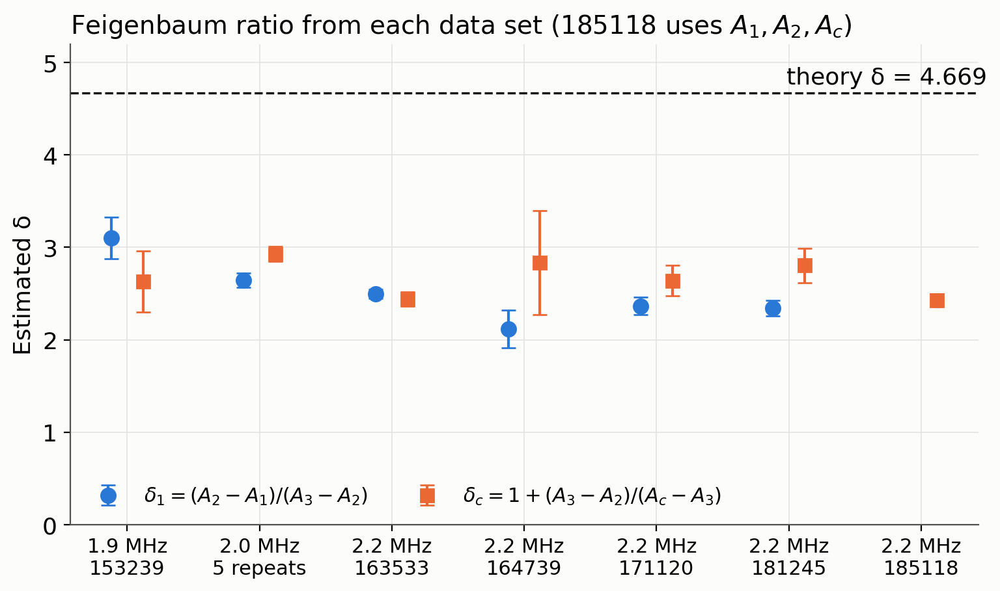
5. 可靠性檢查：不是量測或判斷方法的問題
- 重複性：2.0 MHz 五次重複，δ₁ = 2.64 ± 0.08。
- 遲滯：2.0 MHz 往上、往下掃（0.02 V 步距），分岔點差異在 1–2 個步距內。
- 探棒：10x 與 1x 的分岔點相同；1x 讓頻譜底噪低約 7 dB。鐵盒加電池在底噪上看不出差別。
- 判斷方法：用四種方法重算（程式的判斷、只用時域、只用頻譜、只用分支分裂量），A₁、A₂ 只差 0.01–0.06 V，δ₁ 都在 2.0–3.4。以 181245 為例，要得到 δ = 4.669，A₃ 必須在 3.89 V，但和週期判斷無關的 f/8 譜線在 4.1 V 以下都還是零。
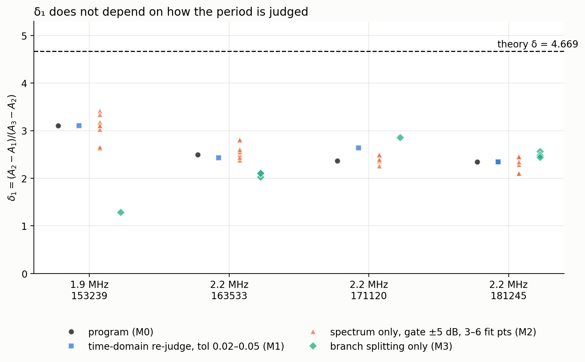
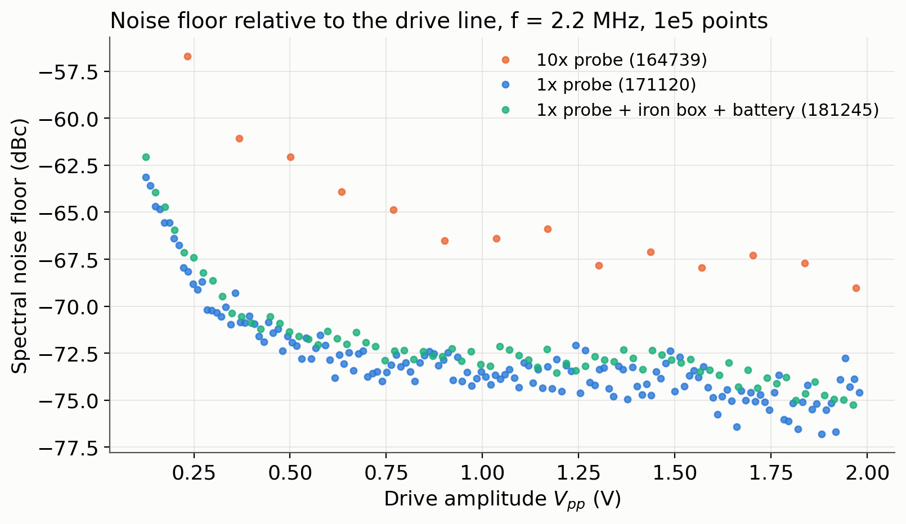
注意：只看時域的週期判斷一定比真正的分岔點晚，而且越高階晚越多；直接讀分岔圖上顏色切換的位置會讓 A₃ 偏大、δ₁ 偏小。程式的閾值是用次諧波外插，已修正這個延遲。
6. 頻率的影響
1.8 MHz 以上都是乾淨的 P1 → P2 → P4 → P8 → 混沌，再接週期 3、6 窗口。A₁ 幾乎不隨頻率變，A₂、A₃ 與混沌起點隨頻率升高而降低，所以 δ₁ 隨頻率變小。1.8 MHz 以下會先出現週期 4 的「泡泡」再退回週期 2，路徑不同；1.9 MHz 也還有一個小泡泡（2.49–2.89 V）。
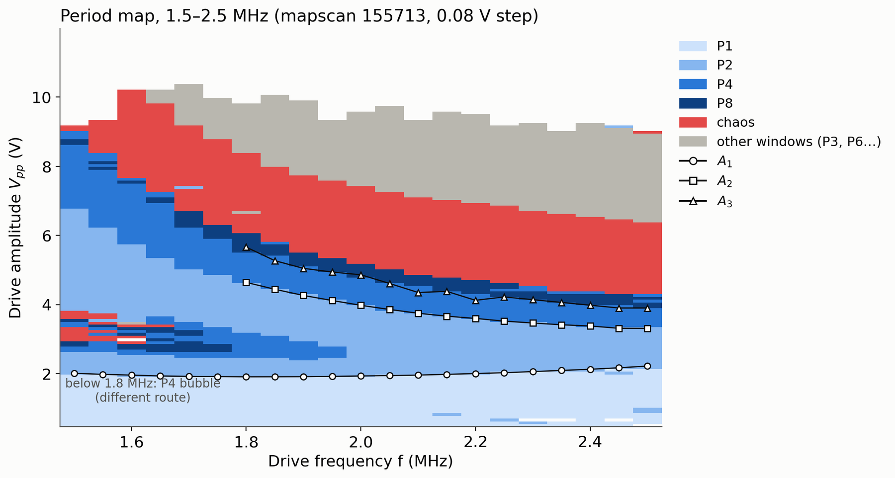
7. 跳變與偏壓
2.2 MHz 的每一組資料都在約 2.8 V 突然跳到另一個週期 2 軌道：上分支幾乎加倍、下分支不變、CH2 峰對峰值增加約 55%。週期 3 窗口內約 7.0 V 也有同樣的跳變。這不是倍週期，而是在兩個共存軌道之間切換，一維單峰映射做不到。這也代表 A₁ 分岔出來的週期 2，並不是在 A₂ 分岔成週期 4 的那一個。
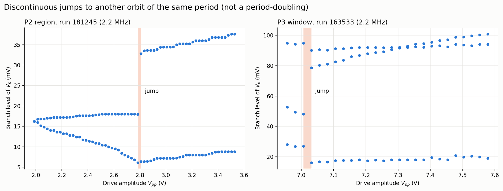
偏壓從 +0.3 V 改成 −0.1 V 後，整個分岔序列（含週期 3、6 窗口）大約是原本的 1/1.84 倍縮小版，形狀不變。
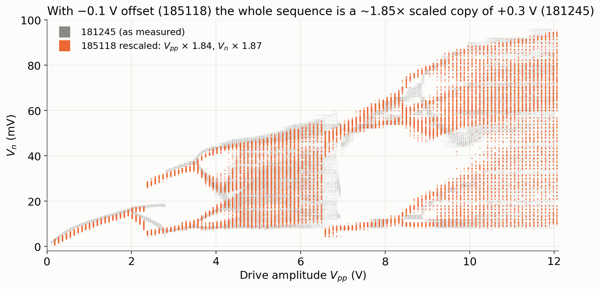
8. 映射是幾維？
用最近鄰法從前 m 個取樣值預測下一個，計算正規化誤差：
$$E_m = \frac{\mathrm{RMS}\left(\hat{x}_{n+1} - x_{n+1}\right)}{\sigma_x}$$如果是一維映射，E₁ 應該就降到雜訊水準。181245 的混沌區得到 E₁ = 0.72、E₂ = 0.14、E₃ = 0.08（週期態只有雜訊時約 0.02–0.07）：只用一個取樣值決定不了下一步。 改用 Rollins & Hunt 建議的變數「每週期最大電流」也只從 0.65 降到 0.56，仍需要兩個變數。
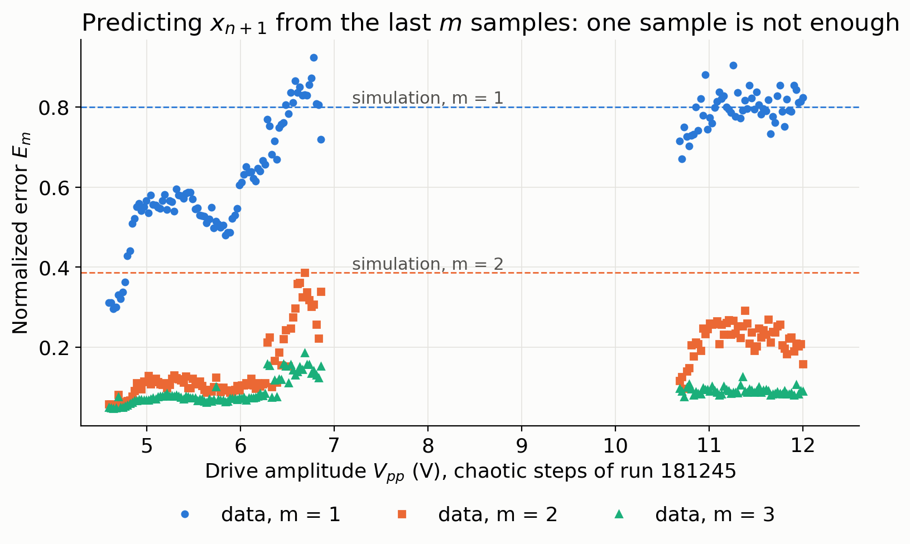
9. 電路模擬與共存吸引子
用 MV2109 的 SPICE 電荷模型（TT = 537 ns，10/14 實測）寫成 ODE，狀態只有電流 I 與接面電壓 V：
$$L\frac{dI}{dt} = \frac{V_{pp}}{2}\sin\omega t - RI - V,\qquad \left[C_j(V) + TT\cdot I_d'(V)\right]\frac{dV}{dt} = I - I_d(V)$$所以每週期取一次 (I, V) 的頻閃映射是二維的。混沌區的 Lyapunov 指數 λ₁ ≈ +0.30、λ₂ ≈ −1.24（每驅動週期），
$$D_{KY} = 1 + \frac{\lambda_1}{|\lambda_2|} \approx 1.2$$相空間每週期只縮小到約 0.37 倍：強耗散，但不是一維。模擬重現了分岔順序、週期 3/6 窗口、2.8 V 類型的跳變，以及 1.9 MHz 的泡泡；分岔點的絕對值約為實測的 0.67 倍（二極體參數用規格書值）。 比較往上與往下掃，2.2 MHz 有兩段共存區：1.40–1.96 V 兩個不同的週期 2（各吸引 54%、46% 的初始條件），4.50–4.68 V 混沌與週期 3（65%、35%）。
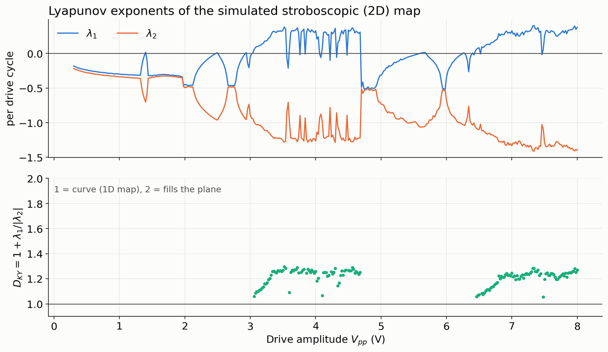
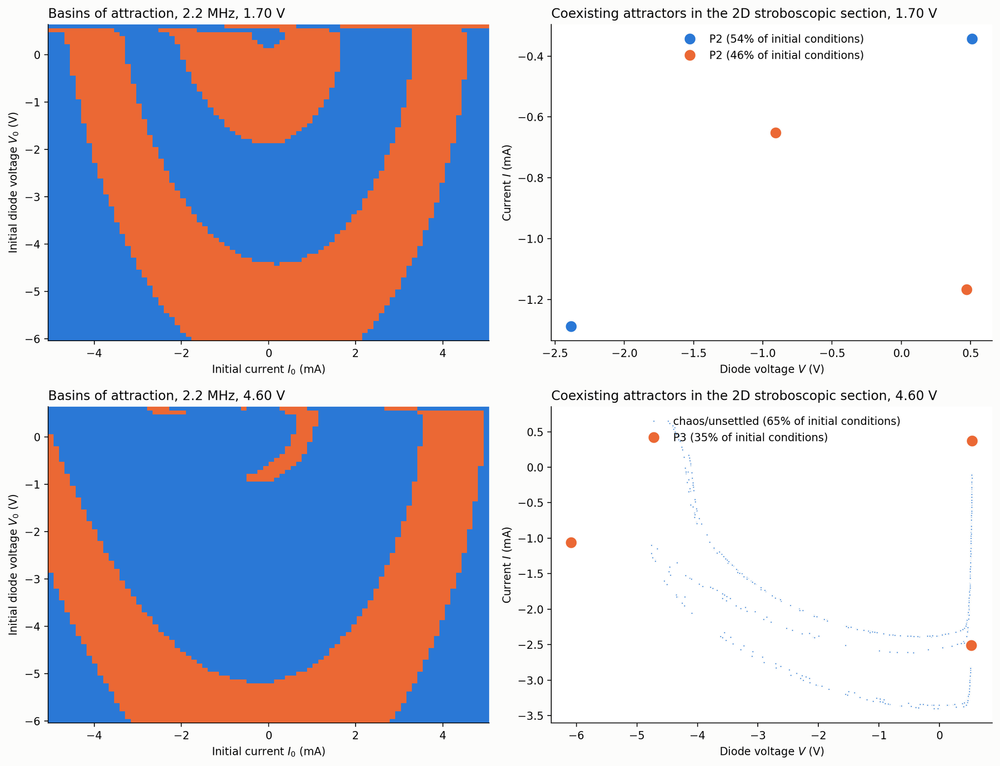
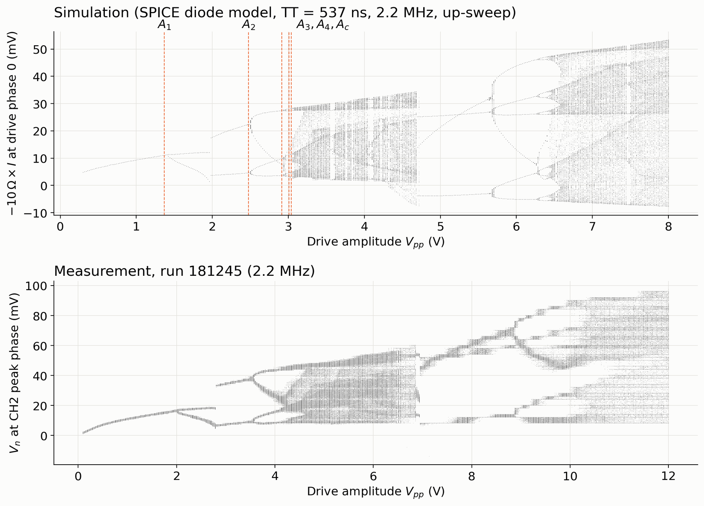
10. δ 為什麼偏低
- 維度本身不會讓 δ 變小。二維 Hénon map 的前幾個比值都在 4.2–5.8，很快收斂到 4.669。
- 第一個比值不在普適區。無雜訊模擬的 δ₁ 與實測幾乎相同（2.2 MHz：2.50 對 2.33–2.50；1.9 MHz：3.06 對 3.10），而 δ₂ = 4.4–4.7。
- 程式的 Ac 是帶狀混沌合併點。181245 在程式標為「週期 8」的 4.42–4.55 V，Lyapunov 指數已轉正。改用 λ 轉正處當 A∞ 並排除 A₁，δ ≈ 3.0–4.2（171120 為 3.0–3.6）；雜訊會讓 A∞ 估得偏晚，所以這是下限。
- 要量到接近 4.669，需要 A₄、A₅。依模擬比例，2.2 MHz 的 A₄ 約 4.36 V、A∞ 約 4.40 V。
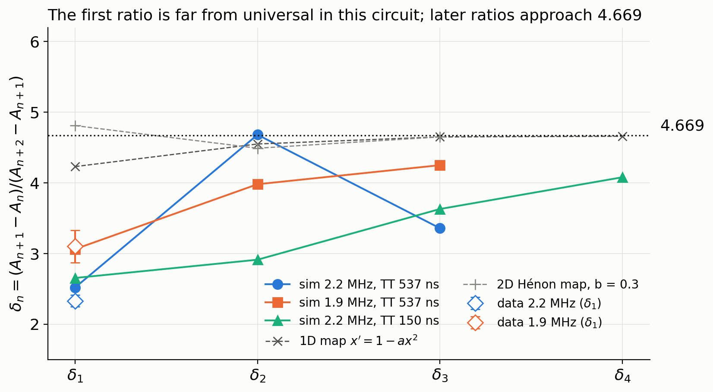
11. 文獻比較
| Linsay (1981) | Testa 等 (1982) | Rollins & Hunt (1982) | 本實驗 | |
|---|---|---|---|---|
| 電路 | 100 µH、180 Ω、1N5470A | 10 mH、28 Ω、1N953 | 模型：理想二極體＋反向恢復 τr | 91.67 µH、約 63 Ω、MV2109 |
| 驅動頻率 | 在共振（1.78 MHz） | 略高於共振（約 97 kHz） | 0.9 倍共振 | 高於共振 10–15% |
| 反向恢復時間 × 頻率 | 未報告 | 應該很小 | ≤ 0.4 | 約 1.2 |
| 第一個比值 δ₁ | 4.4 ± 0.1 | 4.26 ± 0.1 | 2.40 | 2.33–2.50 |
| 之後的比值 | 4.5 ± 0.6 | 4.28 ± 0.1 | 3.85 → 4.66 | （量不到 A₄） |
Rollins & Hunt 用真實參數算出的第一個比值就是 2.40，和本實驗幾乎相同。他們的模型可以化成一維映射，前提是反向恢復時間不超過週期的 0.4 倍；本實驗約 1.2 倍，二極體會「記得」前一個週期，這也是跳變與共存的可能來源。三篇文獻都沒有報告同週期軌道之間的跳變。
文獻：P. S. Linsay, PRL 47, 1349 (1981)；J. Testa, J. Pérez, C. Jeffries, PRL 48, 714 (1982)；R. W. Rollins, E. R. Hunt, PRL 49, 1295 (1982)。數值為閱讀整理，引用前請對照原文。
12. 串聯電感的模擬預測（LTspice）
把 4–5 顆 100 µH（實測 91.67 µH）電感串聯，驅動頻率降到新的共振頻率，讓驅動週期比反向恢復時間長（TT·f ≈ 0.5）。
| 條件 | L | f | TT·f | δ₁ | δ₂ | 共存／跳變 |
|---|---|---|---|---|---|---|
| 現在 | 91.7 µH | 2.20 MHz | 1.18 | 2.50 | 4.5–5.0 | 有 |
| 4 顆，在共振 | 367 µH | 0.976 MHz | 0.52 | 3.0 | 約 7（誤差大） | 有，另有週期 4 泡泡 |
| 5 顆，在共振 | 458 µH | 0.873 MHz | 0.47 | 3.4 | 約 5.5（誤差大） | 有 |
δ₁ 會隨 TT·f 變小而上升，但共存狀態不會消失。換電感比較適合當作「檢驗 TT·f 影響」的實驗，而不是讓 δ 變好的方法。
13. 下一步與限制
下一步
- 在 2.8 V 與 7.0 V 附近往上、往下掃，直接在實驗中證明共存軌道。
- 在 2.2 MHz 的 4.20–4.60 V 用 0.005 V 步距、每點 8 張，找 A₄。
- 量電路輸入端的實際驅動電壓，取代產生器的設定值。
- 串聯 4–5 顆電感，驅動在新的共振頻率，檢驗 TT·f 的影響。
- 用 Lyapunov 指數而不是時域週期標籤判斷混沌起點。
其中往下掃、細掃視窗、頻率清單、偏壓掃描、存完整波形等，需要先修改量測程式，已整理成需求清單交給程式端。
限制與待確認
- 模擬的二極體參數來自規格書，分岔點絕對值與實測約差 0.67 倍；反向恢復用單一 TT 描述，模擬的維度可能偏低。
- 10x 與 1x 探棒量到的 Vn 絕對值差約 1.8 倍，原因不確定；分岔點（驅動振幅）不受影響。
- 偏壓值以使用者紀錄為準（181245 為 +0.3 V、185118 為 −0.1 V），與檔頭紀錄不一致。
- 修正後的 δ（3.0–4.2）依賴 Lyapunov 指數的鄰居距離設定，偏保守。